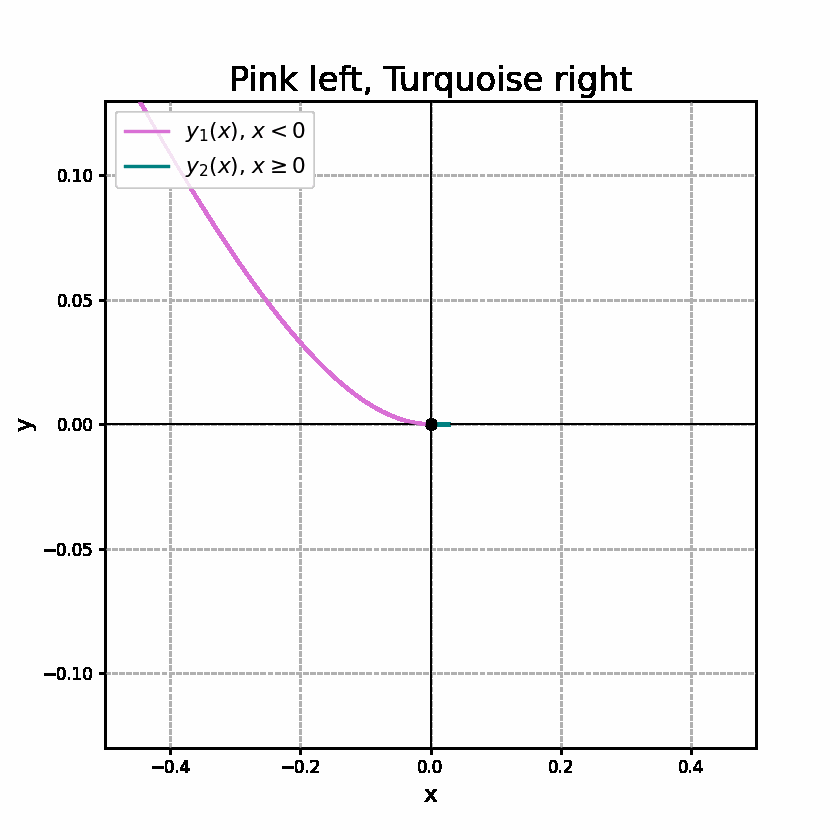

For
three solutions pass through \( (0,0) \):
Because uniqueness fails on \( y=0 \), pieces may be stitched at any junction where both value and slope agree — every stitched curve is again a solution, and every solution is non-decreasing.
